Three processes, one picture
Three words run through this whole lecture, and they're easy to blur together, so pin them down now. is the physical and chemical breakdown of rock at or near the surface, usually within a few tens of metres, because it needs air, water and often plants. is chemically the loss of electrons; for ore deposits it means sulphide and carbonate minerals turning into oxides and hydroxides when oxygenated water reaches them. is a change in a rock's minerals at low pressure because fluids moved through it, and it can happen anywhere those fluids go, from a microscope slide to kilometres around a porphyry.
Why should you care? Because each one changes what you see in the field. Weathered rock covers most of Australia, masks the geology underneath, rarely carries anything economic and has to be stripped before open-cut mining. Oxidised rock can point to buried ore (gossans), record where groundwater moved and pooled, and even form ore on its own (iron and manganese ore, bauxite, the oxide parts of metal deposits). Alteration traces where hydrothermal fluid went, often at the same time metals were dropped, and tells you the temperature, pH and mixing of those fluids. It's the most commonly used vector to ore. It can also turn solid rock into mush.
Weathering: breaking rock and dissolving it
There are two ways to destroy a rock at the surface, and they usually work together. Physical weathering breaks rock into smaller pieces without changing its chemistry: gravity on steep slopes, wind-blown sand acting like sandpaper, plant roots prying cracks open, and expansion and contraction as temperatures swing. Chemical weathering dissolves and reacts the minerals themselves, driven by water, climate and organic acids from decaying vegetation. Dry places lean physical; warm, wet, vegetated places lean chemical.
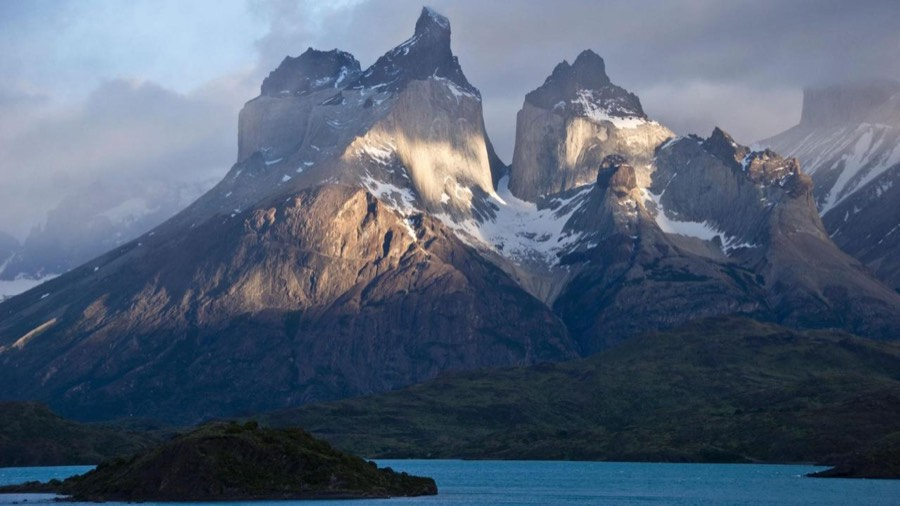
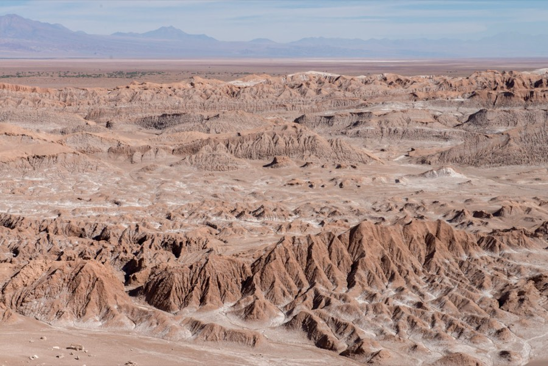
Which landscape has more chemical weathering going on, and what's doing most of the work in the other one?
Show what I see
- A: glaciers, snow, rain, a lake and some vegetation, all on very steep, actively uplifting mountains.
- B: no plants, no water, sharp wind-carved ridges, pale bare rock.
So A has far more chemical weathering, because it has water. It also has strong physical weathering from glaciers, gravity and steep relief. B is almost all physical: wind blowing sand around. Parts of the Atacama have seen almost no rain for millions of years, which is why minerals that should dissolve in rain, like nitrates, sit there perfectly stable. The opposite extreme is Antarctica: everything is frozen, there's no free water, so there's almost no chemical weathering at all.
What chemical weathering actually removes
This is the key idea, so take it slowly. Chemical weathering dissolves the first: sodium, potassium, calcium, magnesium, iron, metals, and often strontium. What's left behind is relatively enriched in the : silicon, aluminium and titanium. Nothing is added; the stayers just make up a bigger share of a smaller pile. Two things follow. Dark rocks go pale, because iron (the main colouring element) has been carried away. That's . And in the most intense tropical weathering, even silica goes, leaving aluminium hydroxide behind. That's how forms: mostly white , often stained pink or red by very fine hematite.
Weathering machineset the conditions
A teaching model, not a real geochemical code. The composition table shows how the rock's make-up shifts as mobile elements leave.
Say a basalt starts with 15 wt% Al2O3, and chemical weathering removes 60 per cent of the rock's mass as dissolved mobile elements while keeping all the aluminium.
You've concentrated aluminium two and a half times without adding a single atom. Go further, strip the silica too, and you reach bauxite grades. This is the same concentration-factor logic from Lecture 1, achieved by subtraction instead of addition.
What controls how fast and how deep
Five things, and you can feel every one in the machine above. Composition and grain size: soluble minerals (halides, carbonates, sulphates, sulphides) go fastest, and coarse-grained rocks weather faster than fine-grained ones because each big grain exposes more surface along its boundaries. Structure: bedding, joints, fractures, foliation, faults, shears and rock contacts all let water in. That's also why you rarely see a clean geological contact in the field; contacts are planes of weakness and weather out first. Topography: high relief means more physical weathering. Climate: heat speeds reactions, liquid water is essential, big day-night swings crack rock (in the desert you can sometimes hear it), and wind abrades. Vegetation: dense cover holds moisture and pumps out organic acids, so warm, humid, forested places weather deepest. Different plants produce different acids, which is still an active research area.
Karst (caves and sinkholes in limestone) is the classic chemical weathering landscape: weakly acidic rain and groundwater dissolve calcite. Rain has become more acidic since the industrial revolution, so karst dissolution has probably sped up. In one north Queensland groundwater study, smoke from land-clearing fires in Indonesia and Malaysia pushed rainwater pH below 3. Below the water table, by contrast, almost nothing happens; the trick is that water tables move up and down all the time.
Reading weathered rock
Weathered rock looks unfamiliar until you know what to look for. Work through these the way you would on a field trip: describe first, interpret second.
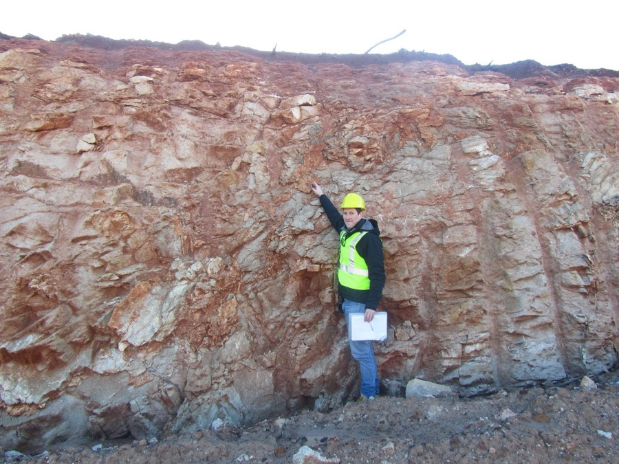
This used to be a hard granite. List three things in the photo that tell you it's deeply weathered.
Show what I see
- Abundant joints and fractures cutting the whole face, now the paths water followed.
- A pale, bleached colour overall: iron has been leached out of the rock.
- Red-orange hematite staining concentrated along the fractures, where that iron reprecipitated.
Up close (slide 17) only small cores of fresh granite survive; the rest is quartz plus clay, soft enough to dig. Weathering attacks from every fracture inward, so the last fresh rock is always in the middle of the blocks.
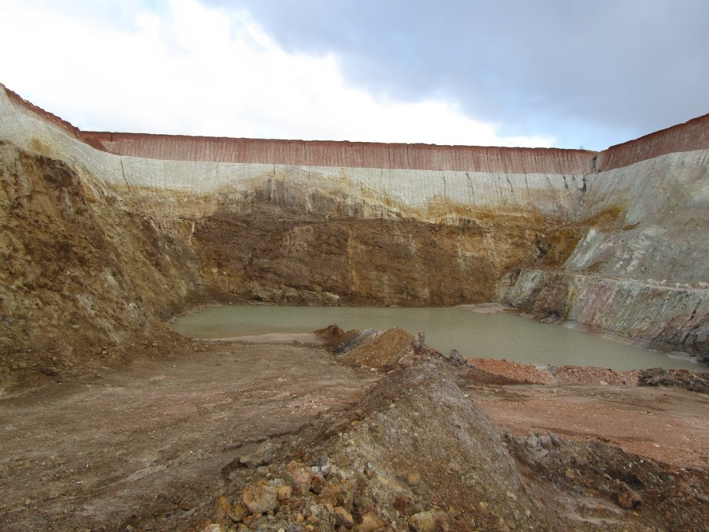
Log this pit wall from top to bottom. What are the layers, and what did water do to make them?
Show what I see
- Top: iron-rich, red-brown soil and weathered rock.
- Middle: a pale, bleached zone where you can still see bedding, but the iron is gone.
- Bottom: brown, iron-altered limestone, then fresh rock.
The water table moved up and down through this profile many times. Each time it carried dissolved iron with it, stripping the bleached zone and redepositing iron above and below. Iron is the element groundwater moves most visibly. Notice also that the iron isn't evenly spread: a fault through the pit controls where the high-iron bands sit.
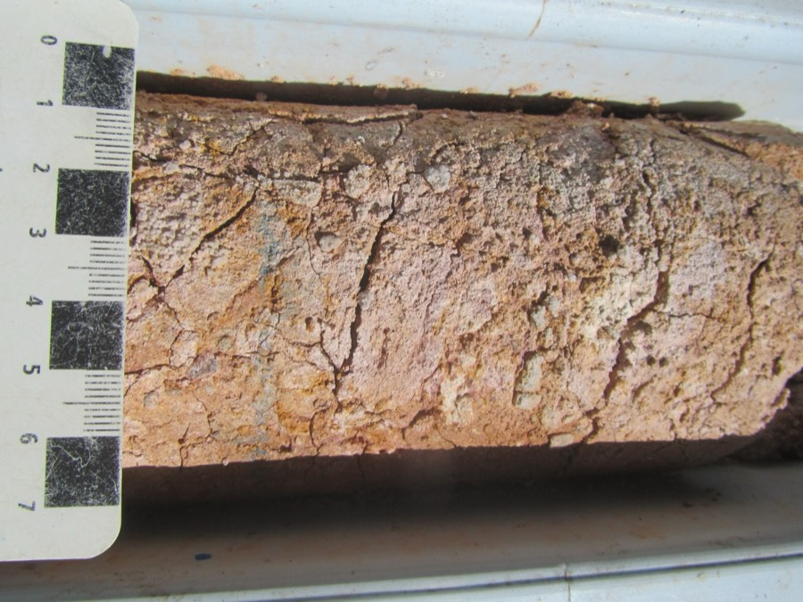
This is 18 m down a drill hole. What rock was it?
Show what I see
Honestly, you can't tell. There's no structure left at all, just kaolinite and hematite. That's the point: in Western Australia you can drill through more than 100 m of intensely weathered material before you hit anything that looks like rock, because the profile has been soaking in groundwater for millions of years. Immobile-element chemistry (later in this lecture) is how you work out what the parent rock was.
The minerals you'll keep finding in weathered rock
| Mineral | What it is | Why it's there |
|---|---|---|
| Quartz | SiO2 | Barely reacts, so it survives |
| Chalcedonic silica | microcrystalline SiO2 | Left when ultramafic rocks lose their Mg and Fe |
| Kaolinite (kaolin) | Al clay | By far the most common weathering clay, from feldspars |
| Hematite | Fe2O3 | Iron oxide where oxygen is freely available |
| Goethite | FeO(OH) | Iron oxyhydroxide; contains hydrogen, so it forms where water pools |
| Jarosite group | K-Fe sulphates | Acidic, sulphate-rich weathering of sulphides |
| Montmorillonite | smectite clay | Swelling clay in less leached profiles |
| Gibbsite, boehmite | Al hydroxides | Extreme leaching: bauxite |
| Anatase, rutile | TiO2 | Titanium is immobile, so it stays behind |
Every mineral on this list is an end product: resistant to any further breakdown. That's the logic to remember. slide 21
Oxidation: why sulphides rust and make acid
Oxidation is losing electrons; reduction is gaining them. In ore deposits that boils down to this: sulphides form in reduced environments deep underground where there's no free oxygen. Bring them near the surface, add oxygenated water, and they're no longer stable. They react, iron ends up as oxides and hydroxides, and sulphur ends up as sulphate. The minerals that oxidise most often are the iron ones: pyrite (FeS2), pyrrhotite (Fe1-xS) and the carbonate siderite (FeCO3).
A handy rule of thumb: hematite means flowing water and plenty of free oxygen; goethite contains hydrogen, so it needs water sitting around, and it marks where water pooled, like at a water table. So the iron oxides in a profile are a map of old groundwater. slide 23 and lecture recording
Pyrite to acid, one step at a timestep 0 of 3
Oxidise one mole of pyrite (about 120 g, a small fistful) into 1000 litres of unbuffered water and watch what happens.
Start with clean, neutral water and a pyrite crystal.
Net result: every mole of pyrite releases four moles of H+ and leaves an orange-brown iron hydroxide that ages into goethite. That's , one of the biggest environmental problems in mining, and it's the same chemistry that builds a gossan. Rock rich in carbonate can neutralise the acid; quartz-rich rock can't.
What controls oxidation
Four things: a supply of oxygenated water (water with dissolved oxygen; without it, nothing happens); the right minerals to oxidise (sulphides and carbonates); structure, porosity and permeability (fractures, bedding, joints, foliation, faults); and climate (rainfall, temperature and especially a water table that rises and falls). slide 26
Gossans: the rusty cap on a sulphide body
A is the oxidised, iron-rich remains of a sulphide body exposed at the surface: mostly goethite, hematite and ferrihydrite, plus whatever secondary minerals the oxidation produced, and only a little of any economic sulphide (galena, sphalerite, chalcopyrite). Gossans sit in the oxidised zone above the water table. They were the first ores humans ever mined, because they're right at the surface and easy to spot. They can point to a deposit below, but not always.
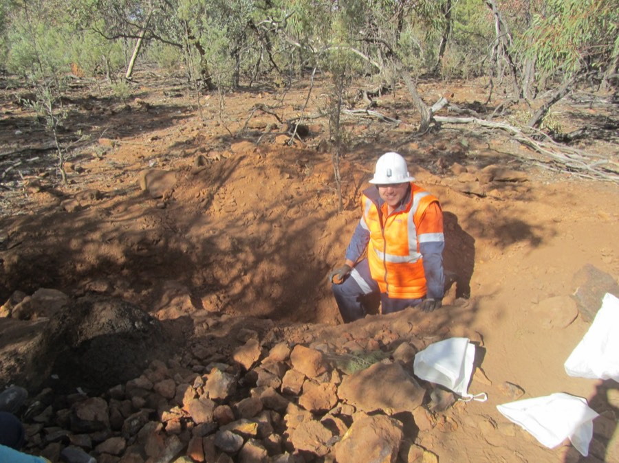
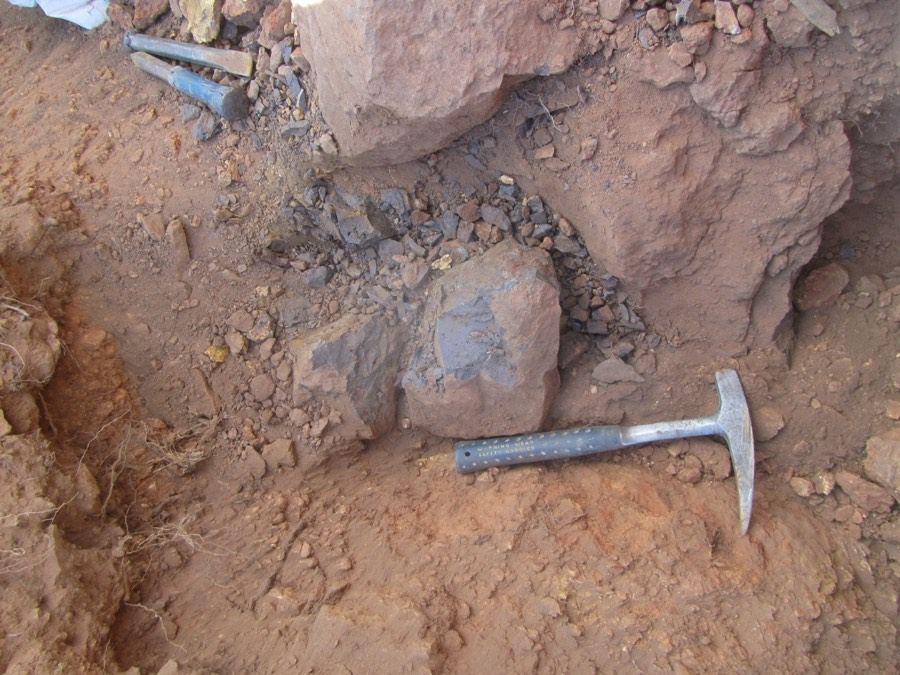
No prospector or miner ever recorded this outcrop. It turned out to carry visible gold all through it, yet there's no sulphide left at all. Why did the gold survive when everything else rusted?
Show the reasoning
Gold doesn't oxidise. The pyrite or pyrrhotite that once hosted it reacted completely to goethite, but the gold grains just sat there, and if anything got relatively richer as the rock around them lost mass. Two lessons: undiscovered gossans are still out there to find, even in well-explored districts like Cobar; and a gossan sample is assayed for metals, not judged by its looks.
A gossan is a promising sign, not a guarantee. Plenty of big gossans in central NSW turned out to be goethite replacing massive pyrite or pyrrhotite with no metals at all. Experienced explorers look at the texture. A classic texture, where goethite has filled the space left by dissolved sulphide crystals and the cell shapes copy the original crystals, tells you what the sulphide was. Some boxworks point to pyrite; others to the copper, lead or zinc sulphides you actually want.
The supergene profile: where copper gets richer
Now put it together into the most important picture in this lecture. Take a primary copper sulphide body (chalcopyrite) and let rain soak into it for a long time. Above the water table everything is oxidising. Below it, conditions are reducing. Copper dissolved in the oxidising zone travels down with the water, hits the water table, finds reducing conditions and reprecipitates as copper-rich sulphides. The water table is the boundary between oxidation and reduction, so it's where metals pile up. That richest layer is the zone.
From top to bottom you get: a gossan; a leached zone stripped of metal; an oxide zone with the brightly coloured copper minerals (malachite, azurite, cuprite, chrysocolla, native copper); then at the water table the enrichment blanket of chalcocite, covellite and bornite; and below that the unaltered primary chalcopyrite. Run the simulator and watch it build.
Supergene simulatorcycle 1
Tap a zone in the picture to see its minerals.
Grades are illustrative, chosen to show the pattern rather than any real deposit.
Why the blanket is so rich
Look at how much copper each mineral carries. The enrichment minerals simply pack more copper into each crystal than primary chalcopyrite does. calculated from formulae
At Girilambone the only thing worth mining was the supergene chalcocite (Cu2S) blanket. The oxide zone above and the primary sulphide below were both too low grade. Supergene zones are usually only a few metres thick and can be anything from absent to around ten metres, so a blanket can make or break a project.
Native copper sounds like a jackpot, but in a modern mine it's a headache. It's soft and malleable, so instead of breaking in the crusher it smears and jams it. Mines stockpile it instead, and heap leaching doesn't love it either, because pure copper eats up the acid. The usual fix is to blend it slowly with lower-grade ore.
Most oxide zones are only a few metres thick. But stack several weathering episodes millions of years apart and you can build an oxide zone over a hundred metres thick. Broken Hill went through at least three, and its oxide zone was spectacularly rich, with masses of native silver and chlorargyrite (AgCl) weighing over a tonne. That's what the "Drop the water table" button is imitating.
When oxidation goes deep: faults and fresh surprises
Oxidation normally stops at the water table. A fault changes that. Oxygenated groundwater can run down a fault plane for millions of years and oxidise rock hundreds of metres below the "normal" oxide zone, so you can drill through fresh sulphide and then hit oxidised ore again.
Core tray · Gladstone Hill, Drake Goldfieldlog all four
Four pieces of core from one hole, in depth order. Assign each to a zone. One of them is a trap.
Tsumeb is a pipe-like orebody in limestone and dolostone. It had a normal oxide zone from surface to Level 11, then fresh sulphide, then a second oxide zone from Level 24 to Level 35, hundreds of metres down, because a fault zone let oxygenated water percolate down for millions of years. That deep oxidation made Tsumeb the source of tens of thousands of world-class secondary mineral specimens.
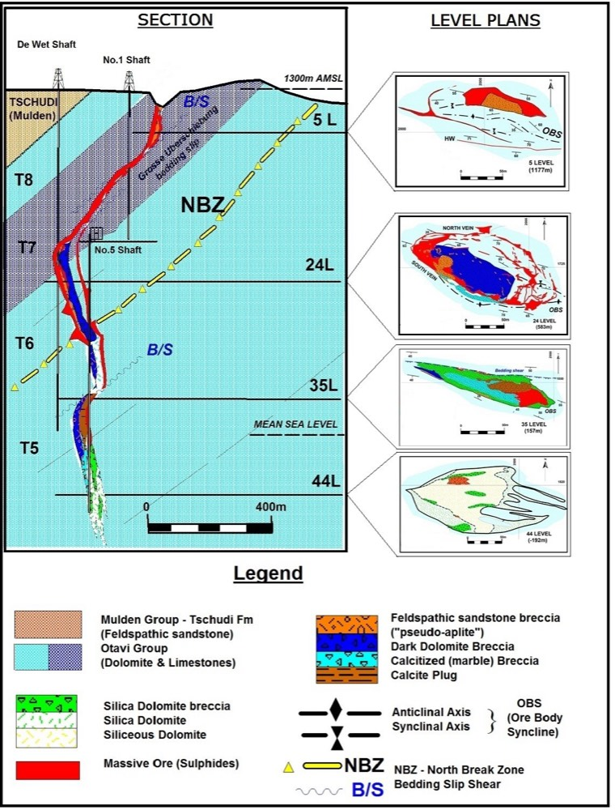
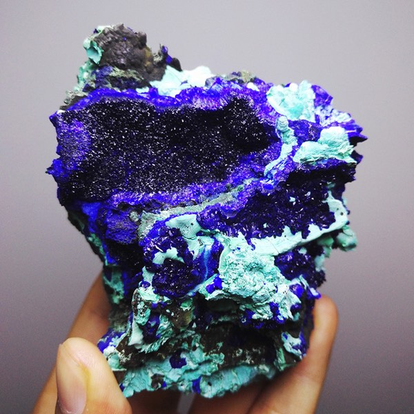
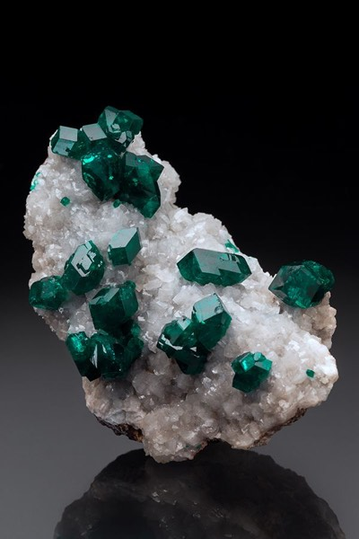
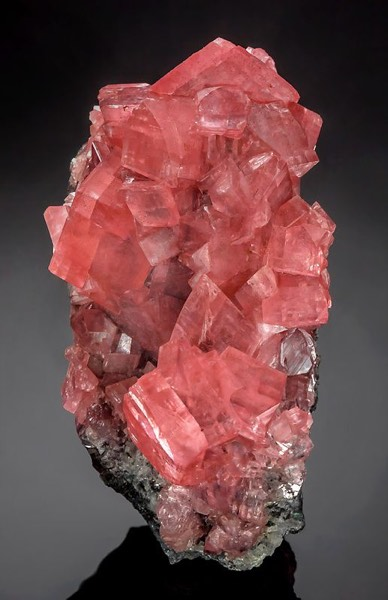
All three are secondary minerals from the oxide zone. Which metal does each carry, and why is C pink?
Show what I see
- A: azurite (deep blue) with malachite (green): copper hydroxyl carbonates.
- B: dioptase: copper silicate, famously vivid green. Tsumeb's are among the best in the world.
- C: smithsonite, zinc carbonate. Zinc has no colour of its own; the pink comes from a trace of cobalt.
Bright colours in an oxide zone mostly mean copper (blue, green). Colourless or white usually means lead or zinc carbonates and sulphates (cerussite, smithsonite, anglesite) unless a trace element tints them.
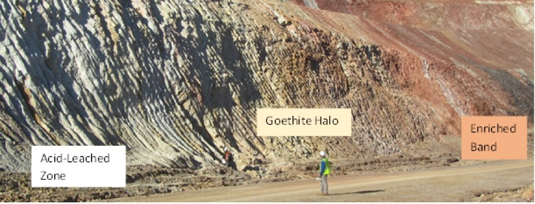
Mount Kelly was mined for its oxide zone only. Which labelled band was the ore, and how do you think it was processed?
Show the answer
The darker enriched band on the right, rich in hematite and copper oxides and carbonates (malachite, azurite). The acid-leached zone has been stripped of metal, and the goethite halo marks iron moved by groundwater around it. The ore was crushed, stacked on a pad and sprayed with acid for a few months, then the copper-bearing solution was pumped off: , about as simple as metallurgy gets. The deposit sits where the Mount Kelly Fault meets the regional McNamara Fault, and the mineralised band runs for about 500 m along strike.
Alteration: fluids rewriting the rock
Alteration is a mineralogical change at low pressure caused by fluids moving through rock, or by oxygen. Hot, often acidic hydrothermal fluid reacts with the minerals it passes, swapping elements in and out. Feldspars turn to clays or micas, ferromagnesian minerals turn to chlorite and epidote, and the rock can gain silica, potassium or sulphur while losing sodium, calcium or iron. It works on every scale from microns to kilometres, and around ore deposits from a metre beside a vein to about two kilometres around a porphyry. That's exactly why alteration is the most common vector to ore: the halo is far bigger than the ore.
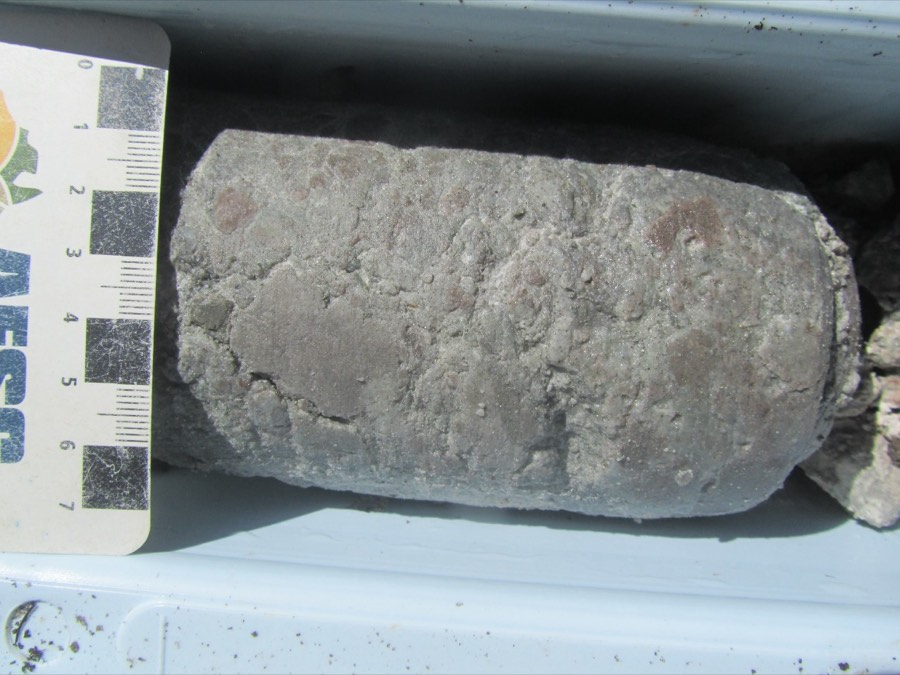
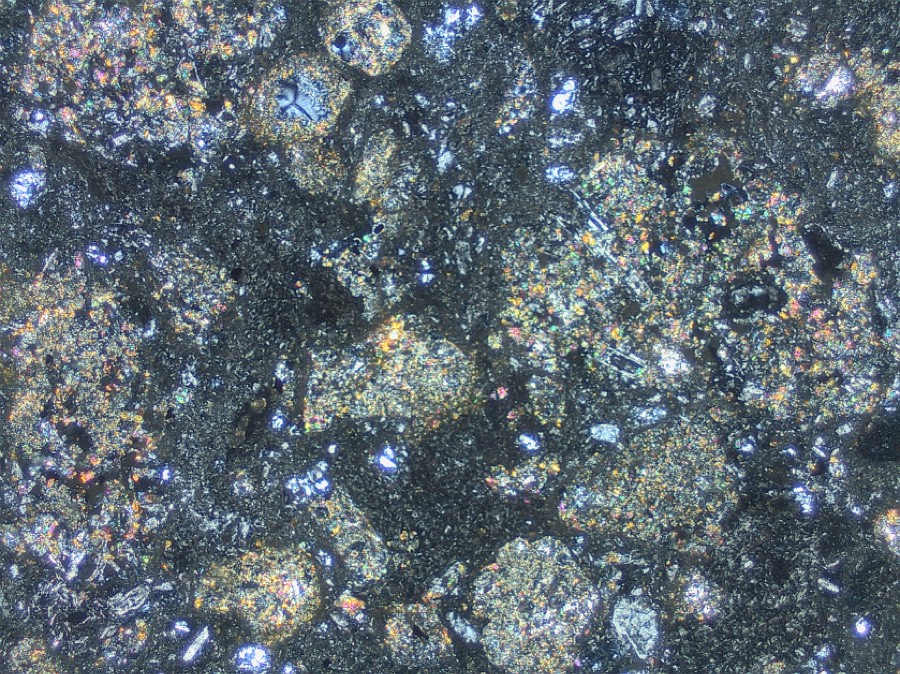
In A, what happened to the feldspars? In B, the bright, high-interference-colour mineral is a classic alteration mineral. Which one, and is it a hotter or cooler alteration than A?
Show what I see
A: the feldspars have all gone to clay, because acidic hydrothermal fluid attacked them. The core is pale, chalky and soft. B: the bright mineral is epidote, which forms at higher temperatures than clay (argillic) alteration. Two rocks, two very different fluid temperatures, and you can read that from the minerals alone.
Four kinds of alteration
At the Hera mine in the Cobar Basin there's a gold lode worth several tens of millions of dollars that will probably never be mined. Nobody checked the mineralogy before driving a tunnel towards it. The host rock was intensely chlorite and talc altered, far too weak to support underground workings. Alteration doesn't just guide you to ore; it decides whether you can safely dig it out. Do your mineralogy first.
Why alteration matters
Alteration tells you hydrothermal fluid moved through the rock. It's often coeval with metal deposition. It records the temperature, pH and pressure of the fluid. It can show where different waters mixed, for example cool, neutral rainwater meeting hot, acidic hydrothermal fluid, which in epithermal systems often triggers gold and silver precipitation. And it can greatly weaken the host rock, as Hera shows.
Alteration assemblages: names that encode temperature and pH
Alteration types are named by their mineral assemblage. Learn them as groups that tell a story about the fluid, rather than as a list.
| Assemblage | Key minerals (low temperature) | What it tells you |
|---|---|---|
| Propylitic | chlorite, epidote group, albite, carbonate, pyrite | Distal, cooler, near-neutral fluid. Rocks go green. Gains Ca, Na, Fe. Pyrite here is early and usually nothing to do with ore. |
| Phyllic (sericitic) | quartz, muscovite/sericite, pyrite, chlorite | Acidic fluid destroying feldspar. Pale, often pyrite-rich. Also called sericitisation. |
| Potassic | K-feldspar, biotite, muscovite, sericite, quartz (+ magnetite at higher T) | Hot, near-magmatic fluid adding potassium; the core of porphyry systems. |
| Argillic | kaolinite, dickite, muscovite, sericite, montmorillonite | Clay alteration from acidic, cooler fluid. |
| Advanced argillic | quartz, alunite, pyrophyllite, dickite, diaspore, zunyite, opaline silica | Very acidic, often near the top of epithermal and porphyry systems. |
A few traps. Quartz is in almost every assemblage, so it tells you nothing on its own. isn't a mineral; it's a field name for fine-grained white mica (muscovite) with quartz. You'll also see phengite, a muscovite variety, and dickite, which is the higher-temperature polymorph of kaolinite. At high temperature each assemblage has an equivalent made of garnet, pyroxene, amphibole, sillimanite, kyanite, cordierite and so on, and those rocks look much more like metamorphic rocks than hydrothermally altered ones. slides 45 and 48
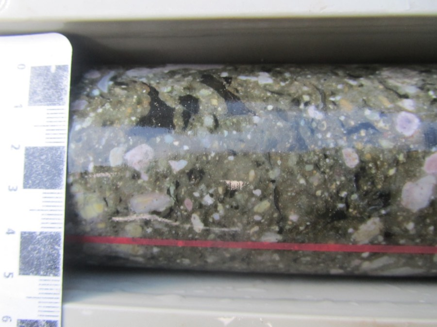
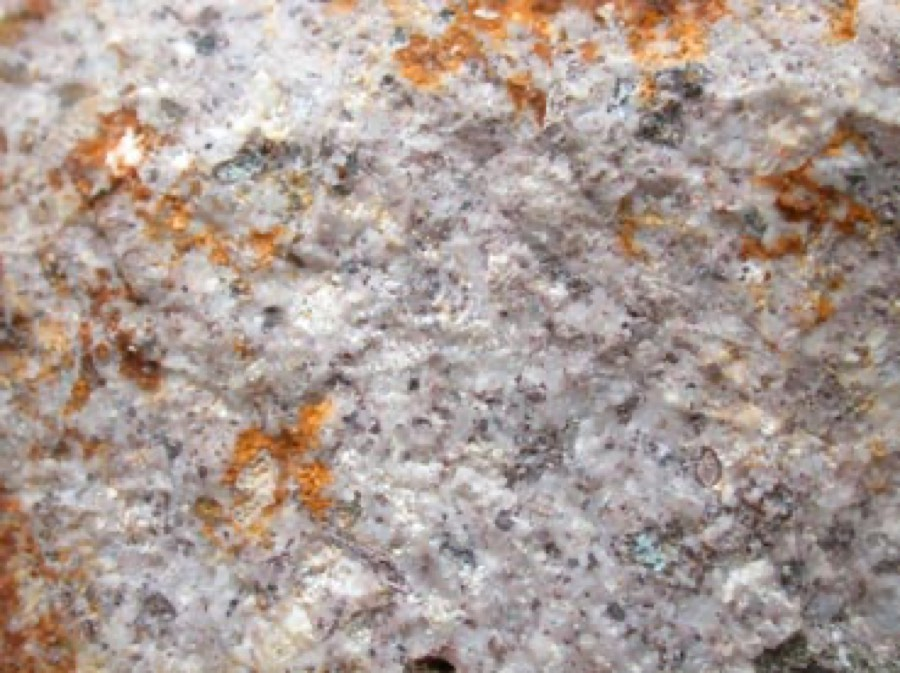
Name the alteration in each, using only colour and what you'd expect to find in it.
Show what I see
A is propylitic: the green comes from chlorite and epidote, and you'd expect scattered pyrite. B is phyllic: pale because feldspar and ferromagnesian minerals have gone to fine white mica and quartz, with orange spots where pyrite has weathered to iron oxide. If green rock, think propylitic, and look for pyrite.
Name that alteration0 / 6
What controls where and how strongly a rock alters
Distribution depends on primary controls (host rock composition, structure, porosity and permeability, how reactive the rock is, how complex the geology is), secondary controls (later faults and fractures, secondary porosity), the fluid itself (pH, composition, volume), and overprinting by later fluids. Intensity mostly comes down to three things: how reactive the host is (carbonate-bearing rock reacts far more than quartz-rich rock), permeability (especially secondary, from fracturing), and the volume and type of fluid. A low-pH fluid is far more aggressive. slides 49 and 50
Zoning: how alteration maps a hydrothermal system
Around a hydrothermal system, alteration forms zones, because temperature and fluid chemistry change with distance from the source. If you can recognise the zones, you can tell which way the heart of the system lies. Two classic models are worth knowing in detail.
Porphyry copper-gold
Press play to watch the zones develop as the intrusion releases fluid, then tap any zone to read it.
Porphyry alteration zoningclassic model
The pattern to remember: potassic core (quartz, K-feldspar, biotite) capping the unaltered porphyry, with a low-grade core inside it that usually isn't mined; the ore shell (1 to 3 per cent chalcopyrite, with the gold) around the cupola at the edge of the potassic zone; a phyllic zone (quartz, sericite, pyrite) with a pyrite shell of around 10 per cent pyrite and no ore; a much wider propylitic halo (chlorite, epidote, carbonate, adularia, albite) with about 2 per cent pyrite; advanced argillic alteration up top; and distal copper-lead-zinc-silver-gold veins out in the propylitic zone. That last point matters: in a porphyry district, don't only look for the porphyry. slide 57 and lecture recording, 18 Sep
Vector hunt · find the ore shell8 samples left
A porphyry is buried somewhere under this map. Each tap is a surface sample that tells you the alteration. Use the zoning to walk inward and hit the ore shell before you run out.
VMS (VHMS)
On the seafloor, the alteration sits mostly in the footwall, because the hanging wall is deposited after the ore. Under the massive sulphide is a feeder pipe: a core of very iron-rich chlorite and sericite with sulphide stringers (usually chalcopyrite, not lead or zinc, and sometimes rich enough to mine), then quartz with iron-rich chlorite under the massive sulphide, and around the outside, magnesium-rich chlorite. So chlorite composition is a vector you can see: iron-rich chlorite is a deep green, magnesium-rich chlorite is nearly colourless. Carbonates do the same thing, going from Mg-rich far out to Fe-rich near the ore. Barium is enriched highest above the ore, and manganese and iron oxide deposits and barite form on the seafloor away from the vents, so finding barite can tell you you're in the right system but still distal. slides 58 and 61, lecture recording 18 Sep
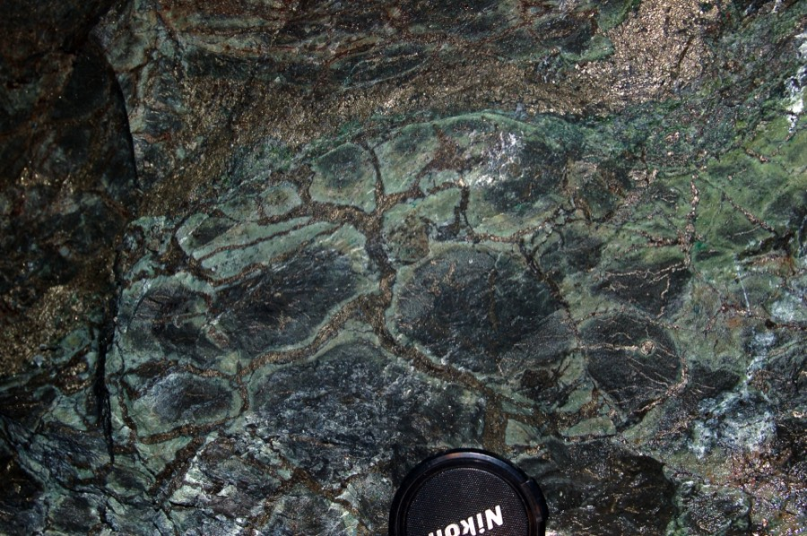
These are Archaean pillow basalts, over 3 billion years old. Where did the sulphide go in first, and why there?
Show what I see
Sulphide first replaced the margins between the pillows and filled joint cracks, because those are planes of weakness that fluid can get into. Strong chlorite forms around pillow boundaries where flow was weaker. Closer to the vent, flow was intense enough to bleach the basalt and replace whole pillows with chalcopyrite and pyrite. It's a replacement deposit: you can watch it eat the rock from the outside in.
Real systems are messier than these diagrams. Multiple intrusions or eruptions over a long time, several fluid events, overprinting alteration, metamorphism, deformation, faulting, and then weathering and erosion all scramble the neat shells. Use the models to make predictions, then let the rocks tell you where you're wrong.
Measuring alteration: from core to numbers
Your eyes are the first tool, but they're not enough. A proper alteration study works at every scale from deposit to microscope. Thin sections show mineral groups and, crucially, overprinting relationships (which alteration came first). identifies the fine-grained clays and micas you can't resolve optically, and quantitative XRD can even tell you how much illite versus muscovite you have and how crystalline the illite is. Spectroscopy identifies clays and chlorites quickly. For cryptic alteration, chemistry is everything: ICP-MS and XRF, and in the field, .
Mining companies use pXRF constantly. It's excellent for copper, lead and zinc. It's poor for rare earths, not great for silver unless there's a lot of it, and no good for gold. Know your instrument's blind spots before you trust a number.
You can also date alteration directly: K-Ar or Ar-Ar on illite, muscovite or adularia, and now U-Pb on epidote-group minerals. If the alteration is tied to mineralisation, that dates the ore-forming event as well as the host rock.
The alteration box plot
For VMS systems there's a neat way to measure alteration intensity using only whole-rock data. The (AI) tracks feldspar and glass being destroyed and replaced by sericite and chlorite:
The (CCPI) tracks chlorite, Fe-Mg carbonate and pyrite growing. Plot them against each other and altered rocks move up and to the right. Load the real Cowley Hills samples, then play with the oxides yourself.
AI vs CCPI plotterload the three samples
The diagonal is a schematic boundary between background and altered rock; real least-altered boxes depend on rock type. Preset oxide values were chosen to reproduce the AI and CCPI quoted for each sample.
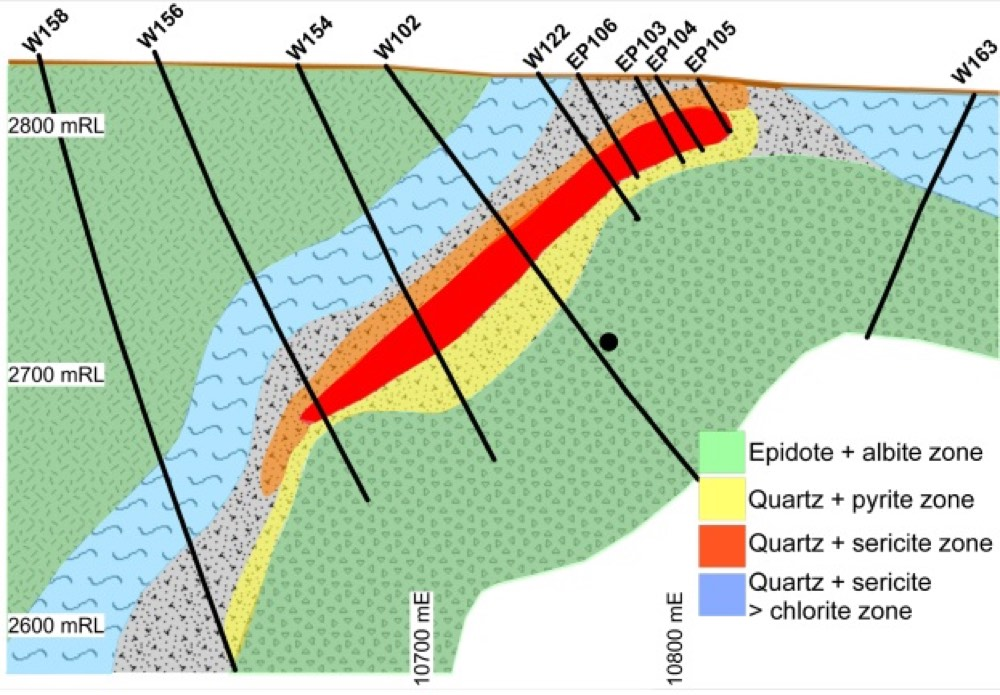
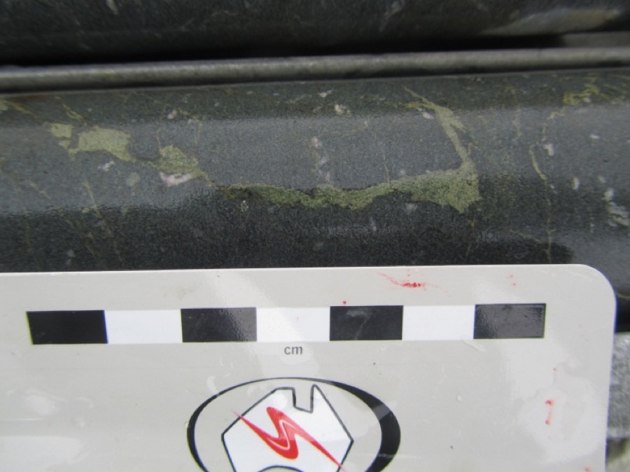
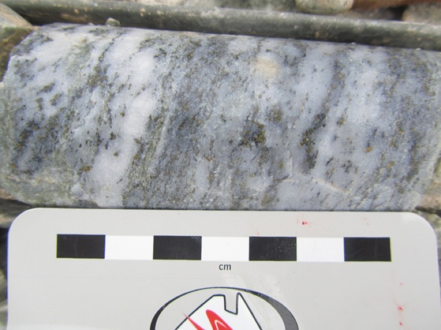
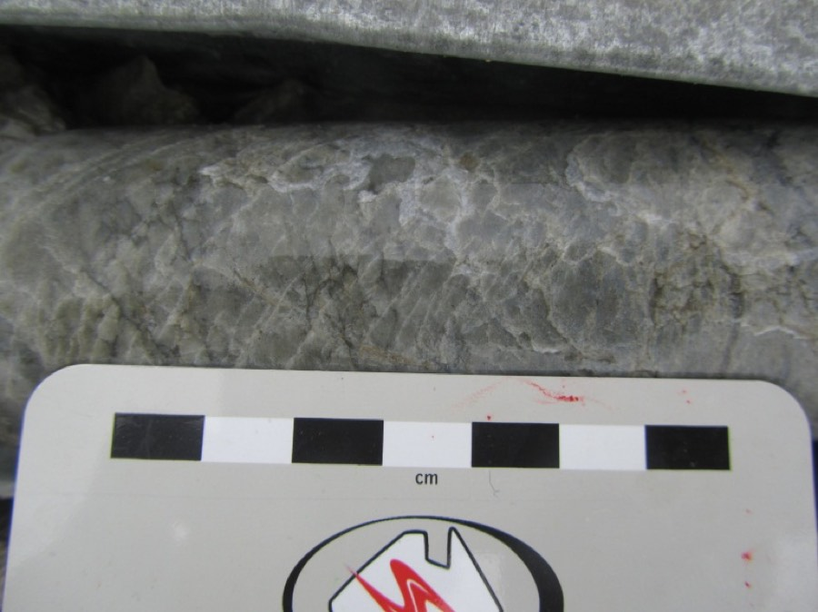
Describe each core in one line, then predict what happens to AI, sodium and barium as you go from 1 to 2 to 3.
Show what I see
- 1: dark basalt with patchy epidote, chlorite and albite. The primary basalt texture survives in thin section; pyroxene has gone to epidote and chlorite, Ca-plagioclase to albite. AI about 50, CCPI about 90. Epidote plus chlorite tells you you're too hot and too far away.
- 2: intense stringer quartz and pyrite, more than chlorite, with chalcopyrite. It's no longer recognisably basalt. AI jumps to about 85, CCPI about 95, and Na2O drops to 0.14% because sodium is mobile in hot fluid and gets stripped.
- 3: intense quartz plus sericite, just above the ore: mostly quartz with lots of muscovite. Barium (754 ppm) and copper (687 ppm) are high even though it isn't ore, because in VMS systems barium precipitates after the sulphides, higher in the sequence.
Down the drill hole, AI and CCPI dip and then jump straight up at the mineralisation and fall away after it. Sodium does the opposite. And if a supposedly distal unit plots in the "favourable" footwall field, go back and look: you may have misinterpreted it, and there may be mineralisation nearby nobody has found.
Immobile elements: seeing through alteration
When a rock is so altered you can't tell what it was, use the elements fluids can't move: zirconium, titanium, yttrium, chromium and aluminium. Their ratios survive alteration, so plots like TiO2 against Zr, or immobile against mobile elements (TiO2 vs SiO2, Zr vs K2O), reveal the original rock. At Cowley Hills, dolerites had been mapped as much younger than the volcanic pile. On Ti-Zr and Y-Zr plots they overlap the basalts perfectly, so they're the same magma: coeval, no dating needed. slide 72 and lecture recording, 18 Sep
A related trick, , converts mobile oxides (Na, K, Ca) to molar ratios and plots them against a conserved element, usually aluminium. Unaltered rocks plot on the feldspar lines; as alteration strips Na, K and Ca, samples slide toward kaolinite. In one Indonesian epithermal system, the barren footwall plotted right on plagioclase, while the mineralised hanging wall units had dropped well toward kaolinite. slide 55
Vectoring to ore: Hera, veins and isotopes
The big question for any explorer is how far away the ore is. At the Hera deposit in the Cobar Basin, the company drilled a 1.5 km hole just to see what the stratigraphy would tell them, starting well away from the orebody and finishing at the mineralisation. Analysing the core showed that the chemistry and mineralogy start changing hundreds of metres before you hit ore. Drag the drill bit along the hole.
Drilling towards Hera1500 m from ore
Where's the bit? Three mystery samples
Curves are sketched to the shape and distances reported in the case study, normalised to 1 in background rock. They are not the real assay values.
Why does it work? Strontium is highly mobile in hydrothermal fluid, so the fluid strips it out; dividing by immobile titanium cancels out changes in rock type. Sr/Ti starts dropping almost 500 m from the ore. Albite is destroyed during phyllic alteration (a sodium-depletion halo), so albite/quartz falls over the last 400 to 600 m. Mn/Ti picks up over the last couple of hundred metres. Combine them and a single drill hole can tell you you're getting warm. slides 74 to 79, lecture recording 18 Sep
Vein deposits: almost no halo
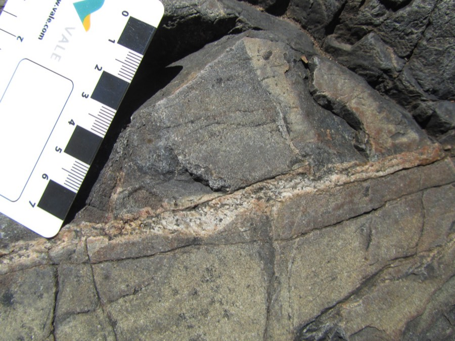
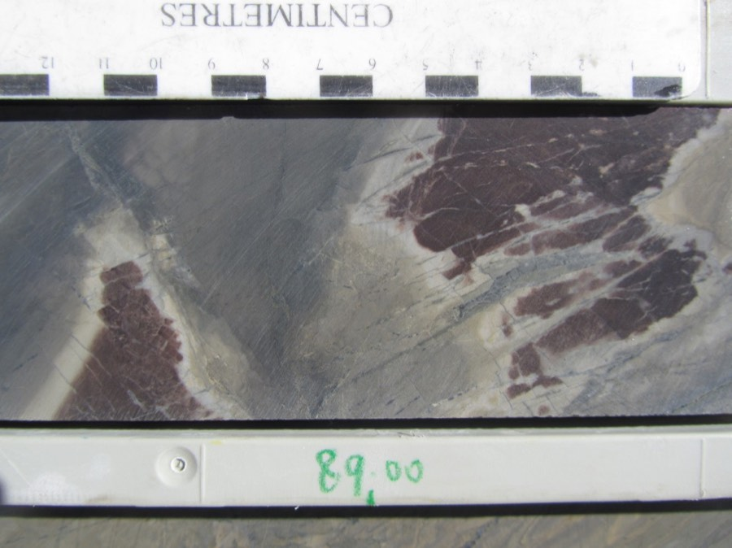
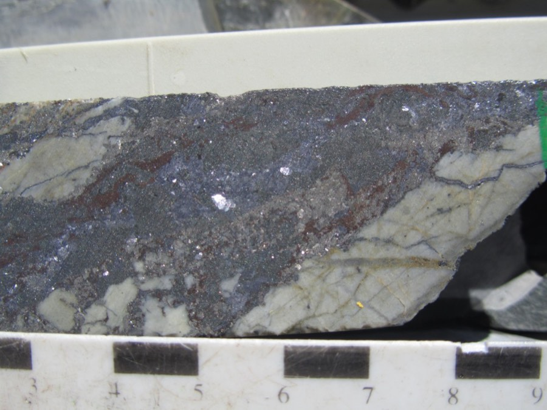
Why can't you use a big alteration halo to find veins like A, and what does the pale rock in B and C tell you?
Show what I see
Vein A carries significant tin and tungsten, but its alteration is only a few centimetres wide. Hydrothermal vein deposits usually have very narrow, discrete alteration zones, a metre at most, so alteration isn't a long-range vector for them. What you do get is bleaching: acidic fluid strips iron and magnesium, and the silicon and aluminium left behind make the rock pale. Nothing was added, so the rock looks white because the colouring elements are gone. When you start seeing bleaching like B, you're close. In C, the dark ore carries about 2000 ppm silver, and the host fragments inside it are completely bleached.
Isotopes can vector too. In one regional study in northern NSW, sulphur isotopes in sphalerite, arsenopyrite, galena and pyrite fell systematically towards the more magmatic, tin-bearing part of the system: values around zero in the silver veins, negative values towards the tin. So the isotopes told you which way the heat source was, and which metal you were likely to find. lecture recording, 18 Sep
Self-test
Answer out loud or on paper before you open each one. Claim the ounces if you got it.
Glossary and flashcards
Terms this lecture assumes or defines quickly. The dotted words in the text open them in place.
Flashcards
Where this goes next
Breccias, veins and replacement textures (L3) are the plumbing these fluids used. Ore petrography (L4) is how you identify the oxide, supergene and primary minerals from this lecture under the microscope. Structural controls (L5) explain why faults keep turning up as the thing that focused fluid or let oxygen go deep. And the VMS and porphyry zoning models return in full in L10 and L11.